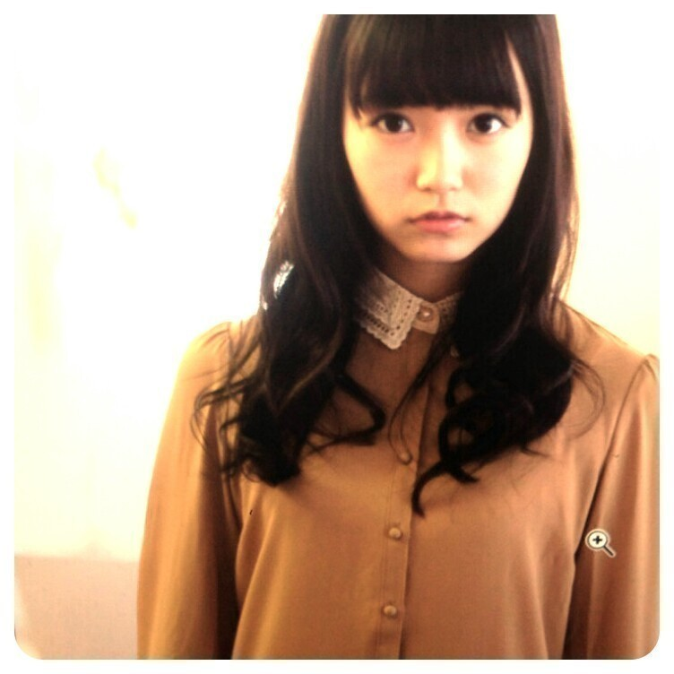
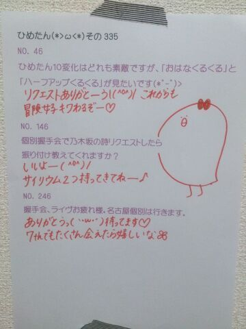

| 2013/11 28 Thu | ひめたん(*>ω<*)そ の375 |

ナタリーグラビア公開されました*\(^o^)/*
初々しい感じが伝わりますかねー
グラビア初めてで緊張したんですよー
でもとっても楽しい撮影でしたっ
こうやっていっこいっこ
新しい経験をさせていただけるの
ステキなことだよね
ナタリーさんステキなお写真
ありがとうございました！
初グラビアがナタリーさんで
ほんとに心強かったです(＊´;ω;｀＊)
さて！
7thシングル「バレッタ」
無事発売日を迎えることができました
自分たちのシングルってのは
どれも大切な作品だけど
取り分けて7枚目は思い出深いなあ。
あっそうそう
通常盤がいま手元にあるよーって方は
よかったら見てみてほしいのが
いっちゃんラストのページで
愛称占いしてるの
ひめたんだよー∩^^∩
◎11/29(金) ネクストメジャー・アイドルSpecial
◎11/30(土) BUBKA
ぜひチェックしてみてください☆
ブブカさんの方は
インタビューの一部がサイトにも
載っけていただいてるみたいなので
よかったら飛んでみてー♪
http://bubkaweb.com/idol/archives/191
あっ公式サイトのプロフィール写真
変わったみたいだよー☆
私たちのニューシングル「バレッタ」がフルサイズの配信もスタートしてます！！
レコチョクではダウンロードしてくれた方の中から
抽選で、お気に入りメンバーのメッセージ入りポスターやサイン入り色紙をプレゼントします!!
是非、チェックしてみてね♪
詳しくは公式HPでみてね！
DLはこちら！
http://recochoku.com/nogizaka46/barrette/sp/
ナタリーグラビア公開されました*\(^o^)/*
初々しい感じが伝わりますかねー
グラビア初めてで緊張したんですよー
でもとっても楽しい撮影でしたっ
こうやっていっこいっこ
新しい経験をさせていただけるの
ステキなことだよね
ナタリーさんステキなお写真
ありがとうございました！
初グラビアがナタリーさんで
ほんとに心強かったです(＊´;ω;｀＊)
さて！
7thシングル「バレッタ」
無事発売日を迎えることができました
自分たちのシングルってのは
どれも大切な作品だけど
取り分けて7枚目は思い出深いなあ。
あっそうそう
通常盤がいま手元にあるよーって方は
よかったら見てみてほしいのが
いっちゃんラストのページで
愛称占いしてるの
ひめたんだよー∩^^∩
◎11/29(金) ネクストメジャー・アイドルSpecial
◎11/30(土) BUBKA
ぜひチェックしてみてください☆
ブブカさんの方は
インタビューの一部がサイトにも
載っけていただいてるみたいなので
よかったら飛んでみてー♪
http://bubkaweb.com/idol/archives/191
あっ公式サイトのプロフィール写真
変わったみたいだよー☆
私たちのニューシングル「バレッタ」がフルサイズの配信もスタートしてます！！
レコチョクではダウンロードしてくれた方の中から
抽選で、お気に入りメンバーのメッセージ入りポスターやサイン入り色紙をプレゼントします!!
是非、チェックしてみてね♪
詳しくは公式HPでみてね！
DLはこちら！
http://recochoku.com/nogizaka46/barrette/sp/

ひめたんの好きな
クリスマスソングを教えてください。
恋人がサンタクロース とかかな(*^O^*)
ひめたんはこういうコメントきたら
嬉しいってありますか???
かまちょかまちょーな性格なので
どんなこと書いてあっても嬉しいです( ^ω^ )/
いつもありがとーう！
背伸ばしたいんだけど、
どぅしたらのびるかなぁ？
いっぱい背のびしたらいーと思う♪
ねねころは牛乳飲んでるらしいよー(*´ `*)
ひめたんはなに太郎が好き？
ハム太郎
 ！
！
テケテケを実際に見た事ある？
テケテケ。作品の名前であってますか？
見たことないです(´・ω・｀)
教えてくれてありがとーうっ
女の子は女の子らしい方がやっぱいいのかな？
どうしたらひめたんみたいに
女の子らしくなれますか？
乃木坂にもいろんなタイプがいるし
自分の理想を大事にするのがいちばんだと思うけど
ひめたんはおにゃーのこを満喫したい人です＊
ひめたんもまだまだ全然だーけど
理想像があるかないかっておっきいと思うなー
会えないときの寂しさを紛らわすのは
何したらいいですか？？？
まさに今この期間ねっ
何でしょう。CD解禁を待って
作品を観倒し聴き倒してはいかが？
次に会ったときに
ふああああってなるんじゃないかな♪
ひめたんは学校には
どんな髪型していってるの？
やっぱ、ひめたん結び？笑
気分が乗ればがんばって
編み込んでみたり巻いてみたり
ひめたん結びしてみたりするんだけど
気分が乗らない日は何もしなかったり......
お待たせしましたコーナー名！
たくさん考えてくださって
ありがとうございました( ´ ▽ ` )
全部書き出してみたの
そんでねいろいろ考えたんだけどね
やっぱりステキな名前ばっかりで
決められなかったから
ひめきゅんさんの総意とゆーことで
いちばん多かったのにしました♪♪
ひめたんのブログの
コメント欄下２ケタに46を踏んだ方へ
手書きでコメ返するコーナー
＼ ひめたん46 ／

7thシングルの６曲の中で
いちばん好きな曲は何ですかー？
(＊´・ω・＊)
コメント(388)
2013/11/28 23:48